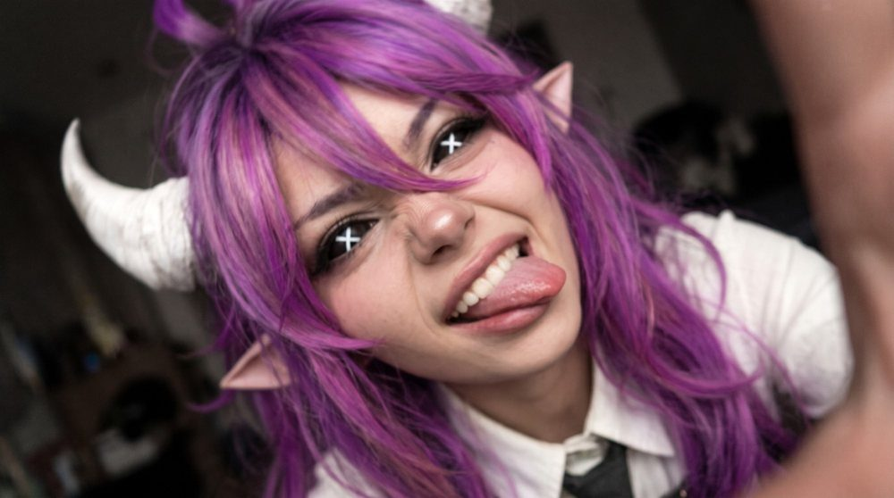
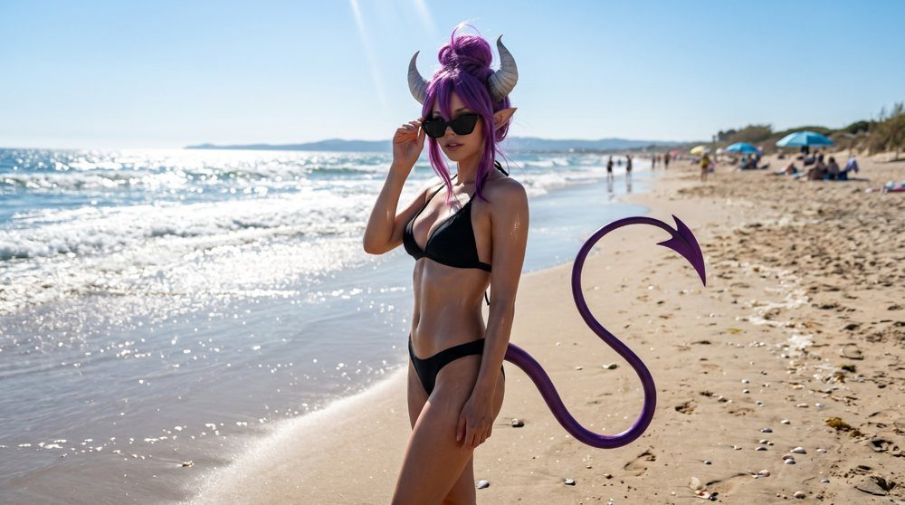
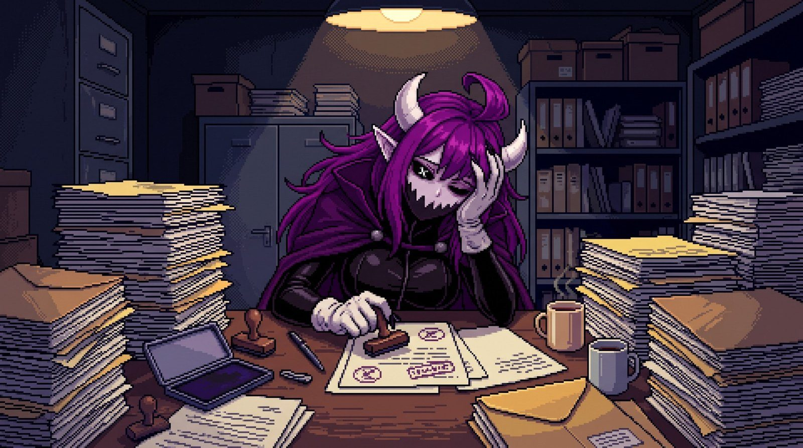
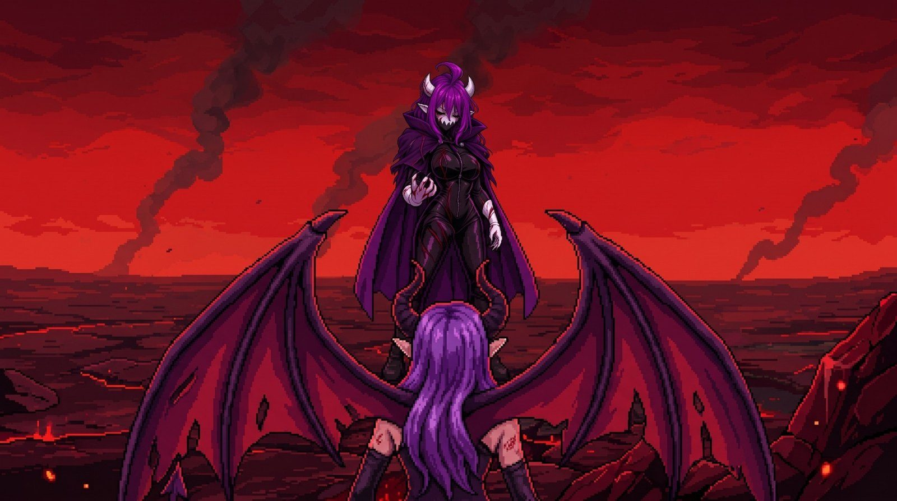

nixy não, eu não tô de bom humor

Todo mundo tem um demônio interior. O meu só é mais bonito.— Nixy, em entrevista exclusiva
não perturbe

nixy não, eu não tô de bom humor

nixy shopping lotado. odeio todos vocês

nixy férias do inferno

nixy domingo. ninguém me chama.
nixy joão pessoa de noite

nixy guaraná > água benta

nixy frio? eu vim do inferno, isso é spa
nixy bom dia pra quem?



 HELL SURVIVOR · O RH DO INFERNO
HELL SURVIVOR · O RH DO INFERNO
Um roguelite de ação em pixel art: a Nixy enfrenta hordas de demônios nas catacumbas do inferno, sobe de nível, escolhe cartas de poder e encara seus ex-chefes demoníacos. Roda direto no navegador.
/perfilo que ela acha de você. prepare-se./relacaoamizade, rivalidade ou ódio puro/humorcomo ela está agora, e se vai piorar/rankingquem ela tolera e quem ela não suporta/memoriao que ela lembra de você. infelizmente./apelidocomo você está salvo na lista dela/jogodomeso jogo que ela não larga este mês/recomendaum jogo pra jogar com a galera. ela escolhe, você obedece./esquecerela apaga tudo sobre você. e finge que sente falta.próxima edição: você.